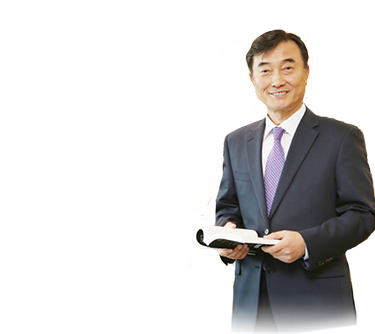

동양미래대학교 홈페이지를 방문해주신 여러분께 감사드립니다. 동양미래대학교는 1965년 개교 이래 50여 년간 7만 6천여 동문을 배출하여 사회와 산업계로부터 인정받고 있으며, 그동안 우리나라의 직업 교육을 선도하고 산업 발전에 크게 이바지했다고 자부하고 있습니다.동양미래대학교는 전통 있는 공학계열 특성화 대학임과 동시에 디자인과 경영계열의 좋은 학과들이 있어 융합인재를 양성하기에 최적의 조건을 갖춘 대학입니다. 우리 대학은 "전문성과 인성의 산실, 최고의 직업교육선도대학"이라는 비전을 가지고 "창의적이고 슬기로운 전문직업인을 양성한다"는 사명을 실천하기 위해 꾸준히 노력하고 있습니다. 동양미래대학교는 교육부의 특성화전문대학 육성사업 및 산학협력선도대학 육성사업과 산업통상자원부의 공학교육혁신지원사업을 수행하고 있습니다. 이와 함께 서울시 캠퍼스CEO 사업과 캠퍼스타운조성 사업을 수행하는 등 지역사회의 중심으로서 소통과 상생의 통로 역할을 다하고 있습니다. 우리 대학은 학생들의 분야별 전문능력뿐만 아니라 인성과 체육을 중시하여 그에 걸맞은 교양교육을 강화하고 있습니다. 이것은 사람됨이 무엇보다 중요하며, 특히 최근에 접어든 4차 산업혁명 시대에는 바른 인성과 건강한 신체를 갖춘 사람이 더욱 필요할 것으로 생각하기 때문입니다. 사람을 가장 소중하게 생각하는 동양미래대학교와 함께 여러분의 밝은 미래를 설계하시기 바랍니다. 감사합니다.
